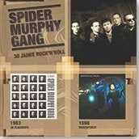

In Flagranti / Hokuspokus
Titelliste
- Heavy Metal Monster Rap
- Bussi Baby
- Kloana Deife du
- I wui ned Jammern
- Geh zoag ma doch die Ding
- FFB
- Herzkasperl
- Ois Okay
- Jameiomeiomei
- Munich City Girl
- Immer auf die Kleinen
- Was ist passiert
- Ich grüße alle und den Rest der Welt
- Hokuspokus
- Du und I
- Ich bin bereit für die Liebe
- S-Bahn-Surfen
- Ein Liebeslied für dich
- Utopia
- De nächstn hundert Johr